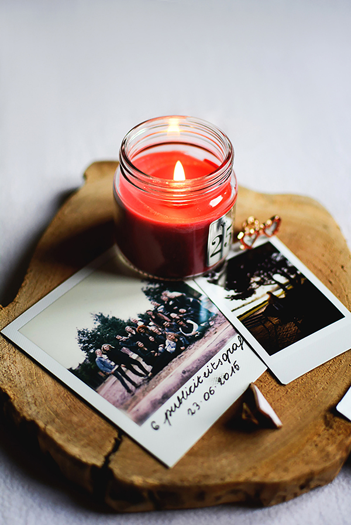

해당 포인트 앤 클릭 형식 미궁 게임은 2016년 초 엔딩을 맞이한 '구절초 질 무렵'의 엔딩기념 패러렐 이벤트용 게임으로,
게임 클리어 후 자유비툴란으로 연결되도록 설정되어있었으나 백업하는 과정에서 본 페이지로 대처하게 되었음을 알립니다.
플레이해주셔서 감사합니다!(* 최종 점검일자: 2018年 2月 2日)
배경 이미지 및 퍼즐 디자인: 찰빵님 / 페이지 구성/편집 및 웹코딩: DR
사용된 배경음악들